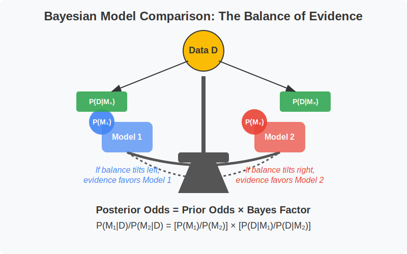

Bayesian Model Comparison¶
Bayesian model comparison evaluates competing models by measuring how well they predict observed data while accounting for model complexity, which is reflected in how broadly the prior distribution spreads probability across the parameter space.
Graphical Summary¶

Key Formula¶
When comparing two models \(M_1\) and \(M_2\), we calculate the posterior odds for each model. The posterior odds represent the ratio of the posterior probabilities for the two models. This can be written as:
Where:
\(P(M_1|D)\) is the posterior probability of model \(M_1\) given the data \(D\).
\(P(M_2|D)\) is the posterior probability of model \(M_2\) given the data \(D\).
\(\frac{P(D|M_1)}{P(D|M_2)}\) is the bayes factor of \(M_1\) and \(M_2\)
\(P(M_1)\) and \(P(M_2)\) are the prior probabilities of models \(M_1\) and \(M_2\), respectively.
Technical Details¶
Recall that the Bayes Factor (BF) is defined as:
This ratio here, \(\frac{P(M_1|D)}{P(M_2|D)}\), simplifies to:
Where:
Prior Odds = \(\frac{P(M_1)}{P(M_2)}\) is the ratio of prior probabilities of the models.
Bayes Factor (BF) = \(\frac{P(D|M_1)}{P(D|M_2)}\) is the Bayes Factor of the two models given data \(\text{D}\).
Thus, the posterior odds can be updated by multiplying the prior odds by the Bayes Factor.
Example¶
Example 1 – fine mapping¶
This example demonstrates Bayesian fine mapping in genetics, which is used to identify causal genetic variants associated with a trait or disease. The code simulates a scenario with three correlated SNPs (Single Nucleotide Polymorphisms) where at least one has a strong signal (Z-score of 5.1).
The analysis:
compares seven possible causal configurations (from zero to two causal SNPs) by calculating approximate Bayes factors for each model
combines these with prior probabilities to compute posterior probabilities
calculates the Posterior Inclusion Probability (PIP) for each SNP, which represents the probability that each SNP is causal, and visualizes these results.
We’ll first simulate a scenario with 3 SNPs that have Z-scores (association statistics) and are in linkage disequilibrium (LD):
rm(list = ls()) # Clear the workspace
# Load necessary libraries
library(MASS) # for multivariate normal
library(ggplot2) # for plots
library(tibble) # for tidy tables
library(dplyr) # for data manipulation
# Simulate Z-scores for 3 SNPs
Z <- c(5.1, 2.0, 1.8)
names(Z) <- c("SNP_A", "SNP_B", "SNP_C")
# Simulate LD matrix
R <- matrix(c(
1.0, 0.8, 0.6,
0.8, 1.0, 0.7,
0.6, 0.7, 1.0
), nrow = 3, byrow = TRUE)
colnames(R) <- rownames(R) <- names(Z)
Z
R
- SNP_A
- 5.1
- SNP_B
- 2
- SNP_C
- 1.8
| SNP_A | SNP_B | SNP_C | |
|---|---|---|---|
| SNP_A | 1.0 | 0.8 | 0.6 |
| SNP_B | 0.8 | 1.0 | 0.7 |
| SNP_C | 0.6 | 0.7 | 1.0 |
We’re considering 7 possible models:
null model (no causal SNPs)
3 single-SNP models
3 two-SNP models This represents all possible combinations of up to 2 causal SNPs.
# Possible causal configurations (max 2 causal SNPs)
configs <- list(
c(), # M0: null
c(1), c(2), c(3), # Single SNP
c(1, 2), c(1, 3), c(2, 3) # Pairs
)
Now we’ll calculate the Approximate Bayes Factor (ABF) for each configuration:
We assume:
Effect sizes \(\sim N(0, \sigma^2)\)
\(Z \sim N(R\beta, R)\)
ABF Explanation:
The ABF measures how well each model explains the observed Z-scores
Higher ABF indicates stronger evidence for that model
The sigma2 parameter (0.05) represents our prior belief about effect sizes
The ABF calculation accounts for:
The strength of association (Z-scores)
The correlation structure between SNPs (LD matrix)
The complexity of the model (number of causal SNPs)
compute_abf <- function(causal_idx, Z, R, sigma2 = 0.05) {
if (length(causal_idx) == 0) {
return(1) # model with no causal SNPs
}
# Subset R and Z
R_c <- R[causal_idx, causal_idx, drop = FALSE]
Z_c <- Z[causal_idx]
V <- R_c + sigma2 * diag(length(causal_idx))
exponent <- t(Z_c) %*% solve(V) %*% Z_c
abf <- sqrt(det(R_c) / det(V)) * exp(0.5 * exponent)
return(abf)
}
abfs <- sapply(configs, compute_abf, Z = Z, R = R)
We combine the ABFs with prior probabilities to compute posterior probabilities:
# Set prior p(causal SNP) = 0.01
p <- 0.01
m <- length(Z)
# Prior on each model
model_priors <- sapply(configs, function(cfg) {
k <- length(cfg)
p^k * (1 - p)^(m - k)
})
# Posterior probabilities
unnorm_posteriors <- abfs * model_priors
posteriors <- unnorm_posteriors / sum(unnorm_posteriors)
posteriors
- 0.000275087664736681
- 0.649065672735477
- 1.82166643771154e-05
- 1.2685150258698e-05
- 0.335622074243419
- 0.0150060561799783
- 2.07361753517139e-07
Finally, we calculate the Posterior Inclusion Probability (PIP) for each SNP:
# PIP for each SNP
pip <- setNames(rep(0, m), names(Z))
for (i in seq_along(configs)) {
cfg <- configs[[i]]
if (length(cfg) > 0) {
pip[cfg] <- pip[cfg] + posteriors[i]
}
}
pip_df <- tibble(
SNP = names(pip),
PIP = pip
)
ggplot(pip_df, aes(x = SNP, y = PIP, fill = SNP)) +
geom_bar(stat = "identity") +
ylim(0, 1) +
labs(title = "Posterior Inclusion Probabilities (PIP)",
y = "PIP", x = "") +
theme_minimal() +
scale_fill_brewer(palette = "Set2")
{kind=link}
Example 2 – multivariate regression¶
This document demonstrates Bayesian model comparison for multivariate regression in the context of genetics. We’ll analyze genetic variants (SNPs) that may affect multiple traits simultaneously, determining which model best explains the observed associations.
The key aspects we’ll explore:
Modeling correlations between genetic variants (LD structure)
Handling multiple traits simultaneously
Evaluating different causal models using Bayes Factors
Calculating posterior probabilities for model comparison
We start by defining the correlation structure between 3 SNPs:
rm(list = ls()) # Clear workspace
library(MASS) # For multivariate normal distribution
library(tibble) # For tidy data
# --- 1. Define LD matrix for 3 SNPs ---
R <- matrix(c(
1.0, 0.8, 0.2,
0.8, 1.0, 0.7,
0.2, 0.7, 1.0
), nrow = 3, byrow = TRUE)
colnames(R) <- rownames(R) <- c("SNP_A", "SNP_B", "SNP_C")
We’ll simulate Z-scores for 2 traits across our 3 SNPs:
# --- 2. Simulate Z-scores for 2 traits ---
Z_trait1 <- c(5.0, 2.5, 1.5) # Signal in SNP_A, others due to LD
Z_trait2 <- c(0.5, 0.2, -0.1) # No signal
Z <- rbind(Z_trait1, Z_trait2)
colnames(Z) <- c("SNP_A", "SNP_B", "SNP_C")
rownames(Z) <- c("Trait1", "Trait2")
print(Z)
SNP_A SNP_B SNP_C
Trait1 5.0 2.5 1.5
Trait2 0.5 0.2 -0.1
We’ll define 4 possible models for how SNP_A might affect the two traits:
# --- 3. Define models ---
models <- list(
M0 = c(FALSE, FALSE), # No effect
M1 = c(TRUE, FALSE), # Effect on Trait1 only
M2 = c(FALSE, TRUE), # Effect on Trait2 only
M3 = c(TRUE, TRUE) # Effect on both traits
)
We need a function to calculate how well each model explains the observed Z-scores:
Explanation:
The following function calculates the log-likelihood under a multivariate normal distribution:
z_veccontains the observed Z-scores for SNP_A across both traitsmu_veccontains the expected effect sizes under a given modelSigmais the covariance matrix (here we use an identity matrix, assuming independence between traits)Higher log-likelihood indicates better fit to the observed data
# --- 4. Define log-likelihood function ---
log_likelihood <- function(z_vec, mu_vec, Sigma) {
dist <- z_vec - mu_vec
ll <- -0.5 * t(dist) %*% solve(Sigma) %*% dist # Multivariate normal log-likelihood
return(as.numeric(ll))
}
We’ll calculate the log marginal likelihood for each model:
# --- 5. Compute log-likelihoods for each model ---
log_marg_liks <- sapply(models, function(effect_mask) {
mu <- rep(0, 2) # Initial effect sizes (set to zero)
# Use a normal prior for the effect sizes, not hardcoded to 5
mu[effect_mask] <- rnorm(sum(effect_mask), mean = 0, sd = 1) # Sampling effect size from normal prior
log_likelihood(Z[, "SNP_A"], mu, diag(2)) # Use diagonal covariance (independence across traits)
})
Explanation:
For each model, we calculate how well it explains the Z-scores for SNP_A across both traits
We use a normal prior with mean 0 and SD 1 for the effect sizes
We assume independence between traits (diagonal covariance matrix)
The log-likelihoods give us a measure of model fit, but we need to convert them to Bayes Factors for proper comparison
Now we’ll calculate Bayes Factors and posterior probabilities:
# --- 6. Calculate Bayes Factors and Posterior ---
log_BFs <- log_marg_liks - log_marg_liks["M0"] # Compare to null model
BFs <- exp(log_BFs)
posterior <- BFs / sum(BFs) # Normalize to get posterior probabilities
Explanation:
Bayes Factors (BFs) quantify the evidence for each model compared to the null model (M0)
BF > 1 indicates evidence in favor of the model over the null
BF < 1 indicates evidence against the model compared to the null
Posterior probabilities give us the probability of each model being correct, given the data
The model with the highest posterior probability is our best model
# --- 7. Output results ---
results <- tibble(
Model = names(models),
logLik = round(log_marg_liks, 2),
BF = round(BFs, 2),
PostProb = round(posterior, 3)
)
print(results)
# A tibble: 4 x 4
Model logLik BF PostProb
<chr> <dbl> <dbl> <dbl>
1 M0 -12.6 1 0.068
2 M1 -10.1 12.8 0.87
3 M2 -12.7 0.91 0.062
4 M3 -21.1 0 0
# Visualize posterior probabilities
ggplot(results, aes(x = reorder(Model, -PostProb), y = PostProb, fill = Model)) +
geom_bar(stat = "identity") +
labs(title = "Posterior Probabilities for Each Model",
x = "Model", y = "Posterior Probability") +
theme_minimal() +
ylim(0, 1)
{kind=link}